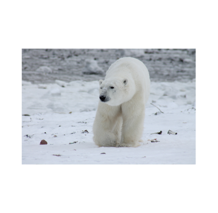
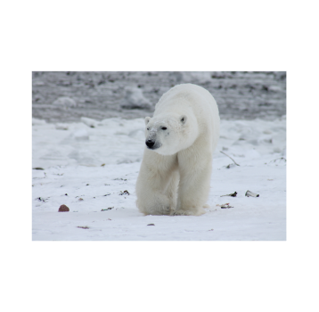
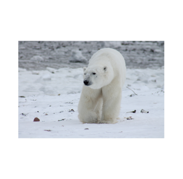

O inverno (AO 1945: Inverno) é a estação mais fria das quatro estações do ano e é comum que durante
esta época, em países mais perto dos polos, as temperaturas fiquem abaixo de 0 ºC e que ocorram
fenômenos como a queda de neve e a formação de geada.
A palavra inverno deriva do latim, hibernum, que significa neutro, invernal, invernoso, tempo frio.
O inverno do hemisfério norte é chamado "inverno boreal" e o do hemisfério sul é chamado de "inverno
austral". A estação não ocorre nos dois hemisférios ao mesmo tempo: enquanto em um hemisfério o inverno
está vigente, o outro está vivenciando o verão.
O Inverno no Brasil se inicia no dia 21 de junho e termina 23 de setembro



 
